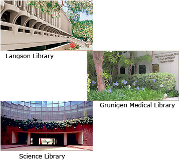

What Is ANTPAC?The newest upgrade for your online gaming system? No, ANTPAC is the Anteater’s Public Access Catalog.It can be accessed from the Libraries’ home page or directly with the following URL: http://antpac.lib.uci.edu. Why Use ANTPAC?ANTPAC provides access to scholarly books and resources found in the UC Irvine Libraries. |
 |